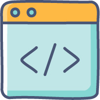

コーディングを学ぶべき

OpenAI研究者が語る「絶対に学ぶべき」本当の理由
- プログラミング学習の目的は、単にコードを書く技術を身につけることだけではありません。
- その本質は、もっと深いところにあります。
- ChatGPTを開発したOpenAIの研究者、シモン・シドル氏は、高校生に向けて力強くこう語ります。
コーディングは絶対に学ぶべきだ
彼がこれほどまでに断言するのはなぜでしょうか？- シドル氏が、これからの時代で最も重要になると考えているスキルは、次のようなものです。
- 今、そしてこれから最も高く評価されるスキルの一つは、複雑な問題を細かく分解できる、真に体系化されたインテリジェンスだ。
- この「体系化されたインテリジェンス」とは、言い換えれば論理的思考力のことです。
- そして、この思考力を鍛えるための最高のトレーニングこそが、プログラミングだとシドル氏は結論づけています。
- つまり、プログラミング学習の本当の目的は、AIを使いこなすための「考える力」そのものを養うことにあります。
- これこそが、AIに的確な指示を出すための、あなたの脳の「OS（オペレーティングシステム）」になるのです。
AIの進化と新しい「必須スキル」
- AIが驚異的なスピードで進化していることは、誰もが認めるところです。特にコーディングの分野では、その能力は日進月歩で向上しています。
- MetaのCEOであるマーク・ザッカーバーグ氏は、「自社のAIはすぐに、中級レベルのエンジニアに匹敵するコードを書くことができるようになるだろう」と語っており、AIが高度なプログラムを生成する未来はすぐそこまで来ています。
- このような状況を踏まえ、OpenAIのCEOであるサム・アルトマン氏は、新しい時代に求められるスキルは「AIツールを使いこなせるようになること」だと指摘します。彼は、自身が高校生だった頃に最重要だった「コーディングを極めること」との違いを次のように説明しています。
- 「私が高校を卒業する時は、明らかに戦略的に重要なのはコーディングを極めることだった」
- そして、AIツールを使いこなすスキルこそが、現代におけるそのアップデート版なのだと、彼はこう締めくくります。
「そしてこれが、その新しいバージョンだ」
- アルトマン氏の言葉は、時代の変化を明確に示しています。
- 単にコードを書くスキルよりも、AIという強力なツールをいかに使いこなすかが重要になっているのです。
- AIを使いこなすことが重要なら、やはりプログラミングは不要なのでしょうか？
- 実は、この二つは対立するものではなく、むしろ強く結びついているのです。
AI時代に輝くためのプログラミング学習
これまでの議論を統合すると、一つの明確な結論が見えてきます。- それは、「プログラミング学習」と「AIツールの習得」は、決して対立するものではないということです。むしろ、プログラミング学習を通じて得られる論理的思考力こそが、AIを効果的に使いこなすための揺るぎない土台になるのです。
- プログラミングを学ぶことで、あなたは次のような「AI時代のスーパーパワー」を手にすることができます。
- AIを最強の部下にする司令塔になる 複雑な問題を小さなタスクに分解し、AIに対して何をすべきか具体的かつ論理的に指示する能力が身につきます。これにより、AIの能力を最大限に引き出すことができます。
- この考え方は、業界のトップリーダーたちにも共有されています。GitHubのCEOであるトーマス・ドムケ氏は、「コーディングは主要科目として教えられるべきだ」と述べており、その重要性は広く認識されています。
未来への第一歩を踏み出そう
この記事の要点を振り返りましょう。- AIがどれだけ進化しても、プログラミングを学ぶ価値は失われません。
- なぜなら、プログラミング学習は、単にコードを書く技術を教えるものではなく、これからのAI時代を生き抜くために不可欠な問題解決能力と論理的思考力を養うための、最高の訓練だからです。
- もしあなたが今、プログラミングの世界に少しでも興味を持っているなら、それは未来への素晴らしい第一歩です。
- 未来は、AIというパートナーに論理の言葉で語りかけられる人たちによって作られます。